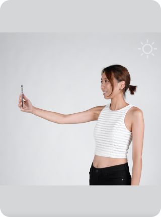

<ion-content class="bg-color">

  <ion-toolbar class="header-toolbar">
    <ion-button (click)="cancel()" routerLink="/avatar" >
      <ion-icon size="large" color="light" src="/assets/custom-icons/ew-back.svg"></ion-icon>
    </ion-button>
    <ion-title class="ion-text-center header-title">Face Scanning</ion-title>
    <ion-buttons  slot="end" >
      <ion-button class="text-regular-12px" color="light" routerLink="/avatar-capture-camera-face" (click)="cancel()">Skip</ion-button>
    </ion-buttons>
  </ion-toolbar>

  <div class=" flex flex-col">
<!--    <div class="flex flex-row mx-5 mt-5 content-center justify-center items-center">-->
<!--      
<!--           src="../../../assets/icon/back.svg"/>-->
<!--      <h1 class="text-xl font-bold text-center basis-4/6 titleDropShadow">Face Scanning</h1>-->
<!--      <div routerLink="/avatar-capture-camera-face" (click)="cancel()" class="basis-1/6">Skip</div>-->
<!--    </div>-->

    <div style="margin: 20px auto 20px auto" class="flex items-center justify-center grow">
      
    </div>

    <div style="margin: 20px auto 20px auto" class="text-regular-15px">
      <ul class="list-disc list-inside">
        <li>Tie up your long hair & show<br>your neck</li>
        <li>Ensure good lighting</li>
      </ul>
    </div>

<!--    <div class="flex flex-row content-center justify-center items-center grow">-->
<!--      
<!--           class="">-->
<!--    </div>-->

    <div class="button-text button-align items-center justify-center">
      <ion-button routerLink="/avatar-capture-camera-face" class="button-secondary-bg" (click)="cancel()"> Get Started </ion-button>
    </div>


  </div>

</ion-content>


